爵士樂迷人的地方，就是在於即興的演出，以及空間的自由氛圍。我們透過互動裝置與實體酒吧的結合，讓體驗者能夠在輕鬆的環境中，參與爵士樂中有關低音提琴，爵士鼓，還有薩克斯風三個樂器的演出。而互動的同時，台前音樂表演者的動畫也會隨著音樂的節奏，一起互動。不懂音符沒關係，來JazzBox爵士酒吧，讓你組合屬於個人的爵士特調風味。

爵士鼓支撐著整個樂曲的框架結構，就好比一個樂隊裡如果沒有鼓，相當於本是迷人的調酒失去了承裝它的容器，總而言之，酒杯在調酒中所扮演的角色就如同爵士鼓在爵士樂中的存在，它們都是提供節奏和基礎的重要元素。

如果低音大提琴和鼓在節奏上能夠緊密的配合，整個節奏組將會在節奏上形成一個很堅實的基底，同時基酒為調酒的主要成分之一，它為調酒提供了獨特的風味和口感，換句話說，基酒和低音大提琴各自作為調酒和爵士樂的核心元素，能夠為整個作品提供穩定的基礎。
